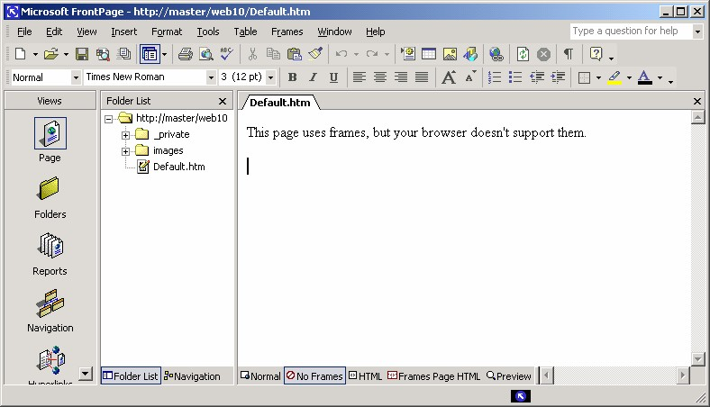

1 Pendahuluan
1.1 Sekilas tentang frame
Frame itu menyenangkan. Frame mudah. Namun Frame dapat juga menjengkelkan.
Frame sebenarnya sangat praktis, tetapi terlalu banyak pengarang web yang
menggunakan monitor beresolusi sangat tinggi dan tidak mempertimbangkan
monitor komputer para pengunjung web.
Frame dapat membuat sebuah situs menjadi sia-sia untuk orang yang menggunakan
monitor resolusi rendah, sebab tidak bisa menampilkannya.
Ada kecenderungan untuk memakai berulang-ulang sarana yang menyenangkan, lalu
tanpa disadari ternyata hasilnya malah amburadul karena terlalu banyak
menggunakan alat tersebut. Conothnya adalah pemakaian font dan pemakaian printer
warna. Dan gejala ini juga berlaku untuk frame.
Jadi sebelum Anda menggunakan frame, terutama untuk frame berjumlah lebih dari
dua buah di dalam sebuah frameset, pikirkan apakah hal ini memang berguna untuk
para pengunjung situs atau hanya menuruti kesenangan Anda saja.
1.2 Latar belakang
Hyperteks telah ada bertahun-tahun, dan sebenarnya merupakan media yang cukup
berkembang.
World Wide Web, baru digunakan secara luas pada pertengahan tahun 1994. Waktu
itu pemakaian Web terbatas hanya pada penampilan data. Klik sebuah link akan
mengganti tampilan dengan dokumen yang dirujuk oleh link tersebut. Klik link
lainnya akan mengganti dokumen tersebut dengan rujukan lainnya.
Masalah utama dengan hyperteks adalah kehilangan arah, pengunjung tidak yakin
sedang berada di mana dan bagaimana sampai ke sana.
Untuk mengatasi masalah tersebut, beberapa perancang sistem hyperteks mencoba
membangun metode-metode alternatif. Prinsip dasarnya adalah “Jangan membawa
pergi pengunjung jika tidak benar-benar perlu.” Jadi, sedapat mungkin membawa
informasi ke pengunjung. Bukan sebaliknya, membawa pengunjung ke informasi.
Mengapa tidak membiarkan dokumen utama dan mengambil dokumen rujukan link
ke dokumen utama. Hal ini dapat dilakukan dengan berbagai cara, misalnya dengan
pop-up, namun sayangnya pop-up hanya cocok untuk menampilkan sedikit
informasi, misalnya tentang definisi sebuah kata.
Cara lainnya untuk membawa informasi ke pemakai ada lah menggunakan bidang
yang berbeda; yaitu membagi windows menjadi beberapa bagian, lalu membiarkan
dokumen awal (utama) pada satu bagian dan menampilkan dokumen referensinya
pada bagian lainnya. Keduanya masih satu halaman.
1.3 Membuat frame
Pada bab ini akan dibahas sebuah fasilitas yang dikenal dalam dunia HTML sebagai
frame. Frame adalah bingkai atau bidang khusus pada tampilan bowser yang
menampilkan halaman lain.
Sedangkan yang dimaksud dengan frameset adalah susunan beberapa frame. Dan
dokumen frame-definition adalah dokumen yang menyimpan informasi tentang
berbagai hal seperti cara mengatur frame, dokumen pengisi frame dan sebagainya.
Proses pemakaian frame adalah:
1. pada saat suatu link di-klik maka proses pertama kali adalah pengiriman
dokumen frame-definition ke browser.
2. Lalu akan dibuat frame-frame di dalam window browser, kemudian proses
transfer dokumen-dokumen pengisi ke masing-masing frame.
Jika Anda membuat dua frame, Anda harus membuat tiga dokumen, yaitu sebuah
dokumen frame-definition, dan dua dokumen yang ingin Anda tempatkan di dalam
masing-masing frame. Selanjutnya , tiga frame membutuhkan empat dokumen, lima
frame membutuhkan enam dokumen dan seterusnya. Anda harus selalu memiliki
dokumen frame-definition yang tidak dapat dilihat pemakai. Jangan kuatir repot,
FrontPage akan membantu Anda membuat dokumen frame-definiton, sehingga akan
memudahkan Anda.
Ketika Anda membuat frameset, FrontPage akan membuat sebuah halaman khusus
yang menampilkan pesan bagi browser yang tidak mendukung frame. Sebab saat ini
mungkin lima persen browser yang ada dipasaran masih belum mendukung frame.
Tentunya kalimat dalam pesan itu bisa Anda ubah sesuai kebutuhan.

Gambar 10.1 Pesan tidak mendukung frame
Copyright © Herlan Lesmana
Created with the Freeware Edition of HelpNDoc: Easily create Help documents